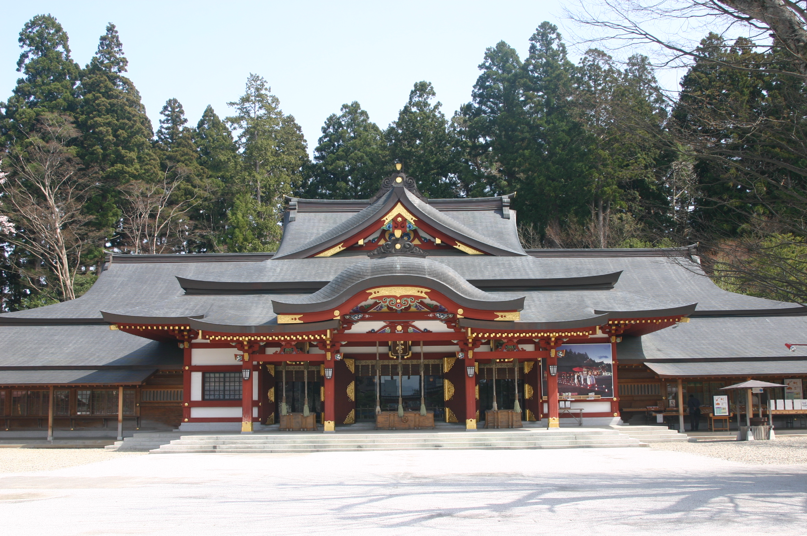
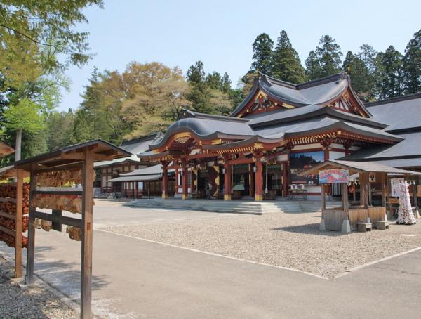

盛岡八幡宮


農業、工業、商業、学問、衣食住など人間生活の根源の神として、
昔から地域の人々の多大なる崇敬を集めてきました。また県下一の
大社として、人々の生活に根ざした信仰や祝い事の拠りどころとして
現在も年間を通して多くの参拝者で賑わっています。県内一の人手で
賑わう初詣だけでなく、いろいろなイベントで賑わっています。
観光情報
所在地 : 岩手県盛岡市八幡町13-1
電話番号 : 019-652-5211
定休日 : 年中無休
営業時間 : 9時～17時
料金 : 入場無料
[アクセス経路]
ルート1： 盛岡駅 → 【バス15分】 盛岡八幡宮
ルート2： 盛岡IC → 【車15分】 盛岡八幡宮